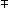
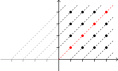
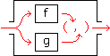
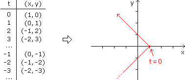
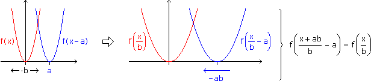

Anhang zu: RELATIONEN UND FUNKTIONEN
ÄQUIVALENZRELATION?
Eine Relation R
 AxA heißt Äquivalenzrelation, wenn sie reflexiv, symmetrisch und transitiv ist, d.h. für alle x, y, z
AxA heißt Äquivalenzrelation, wenn sie reflexiv, symmetrisch und transitiv ist, d.h. für alle x, y, z  A gilt:
A gilt:
- (x,x) R
R
- (x,y) R  (y,x) R
(y,x) R
R (y,x) R
- (x,y) R und (y,z) R (x,z) R
R und (y,z) R (x,z) RÄQUIVALENZKLASSEN?
Wenn R
AxA Äquivalenzrelation und x A, verstehen wir unter der Äquivalenzklasse von x die Menge aller Elemente, die zu x in Relation stehen:[x]R = { y
A | (x,y) R }.Die Menge der Äquivalenzklassen
A/R = { [x]R | x
A }
"modulo"
bildet eine Zerlegung von A, also ein System von Teilmengen, die sich nirgends überdecken und deren Vereinigung A ergibt. Umgekehrt entspricht jede Zerlegung einer Äquivalenzrelation (wobei die Relation darin besteht, in derselben Teilmenge zu liegen).
Beispiel: Bei der Erweiterung der Zahlenbereiche haben wir gleichwertige Operationen gebündelt, wobei die Gleichwertigkeit eine Äquivalenzrelation war und jedes dieser Bündel eine Äquivalenzklasse und neue Zahl.
Aufgabe: Für Tupel aus  2 bedeute (x1,x2)R(y1,y2), dass es ein n mit y1,2 = x1,2 + n oder y1,2 = x1,2 – n gibt.
2 bedeute (x1,x2)R(y1,y2), dass es ein n mit y1,2 = x1,2 + n oder y1,2 = x1,2 – n gibt.
a) Zeige, dass R 2x2 eine Äquivalenzrelation ist, und b) stelle die Zerlegung von 2 in Äquivalenzklassen grafisch dar.
2 bedeute (x1,x2)R(y1,y2), dass es ein n mit y1,2 = x1,2 + n oder y1,2 = x1,2 – n gibt.a) Zeige, dass R
2x2 eine Äquivalenzrelation ist, und b) stelle die Zerlegung von 2 in Äquivalenzklassen grafisch dar.a) Wo im Folgenden m oder n steht, sei auch Fall (i) miteingeschlossen, dass nichts dort steht:
reflexiv? n = 0
symmetrisch? yi = xi ± n
xi = yi  n| transitiv? |

|
yi = xi ± m, zi = yi ± n zi = xi ± (m+n) yi = xi ± m, zi = yi n zi = xi ± (m–n) bzw. xi (n–m)
|
b)

ORDNUNGSRELATION?
Eine Relation R
AxA heißt Ordnungsrelation, wenn sie sonst wie eine Äquivalenzrelation, aber antisymmetrisch ist, d.h. für alle x ≠ y A gilt:
- (x,y) R (y,x)  R
R
R (y,x) REine Ordnungsrelation heißt vollständig, wenn für alle x, y
A gilt:
- (x,y) R oder (y,x) R
R oder (y,x) RBeispiele: "
" ist eine Ordnung in (M), "≤" ist eine vollständige Ordnung in  .
.BILDER UND URBILDER EINER FUNKTION?
Eine Funktion f: M
 N erzeugt für ein A M das
N erzeugt für ein A M dasBild f(A) := { f(x) | x
A }und für ein B
N dasUrbild f–1(B) := { x | f(x)
B }NEBENEINANDERAUSFÜHRUNG?
Die Nebeneinanderausführung (f,g) ist eine Funktion, die an jeder Stelle die dortigen Werte von f und g zu einem 2-Tupel zusammenpackt.
(f,g):
x, (x,y) = (f(t),g(t))Die unabhängige Variable heißt in diesem Zusammenhang Parameter. Wir haben sie mit t bezeichnet, was die Interpretation als Zeit nahelegen soll und den Funktionswert zu einem bewegten Punkt in der xy-Ebene macht, der eine sogenannte parametrisierte Kurve zeichnet.
Bem: Der Graph von (f,g) ist eine Kurve im txy-Raum. Die parametrisierte Kurve ist deren Projektion in die xy-Ebene.
Aufgabe: Zeichne die parametrisierte Kurve von (f,g), wenn
f: , t  1 – |t|
g: , t t
1 – |t|
g: , t t
f:
, t 1 – |t|
g: , t t
ARITHMETISCH VERKNÜPFTE FUNKTIONEN?
Im Skriptum haben wir die arithmetische Verknüpfung von Funktionen über die Funktionswerte definiert:
(f+g)(x) = f(x)+g(x), (f·g)(x) = f(x)·g(x), ... für alle x
Eine andere Möglichkeit ist, das als Hinter- und Nebeneinanderausführung von Funktionen aufzuziehen:
f+g = addo(f,g), f·g = mulo(f,g), ...
SKALIERUNG "PARALLELER" FUNKTIONEN?
Wird eine Skalierung auf zwei Kurven angewandt, die sich nur durch eine Verschiebung unterscheiden, dann tun dies auch die skalierten Kurven.
